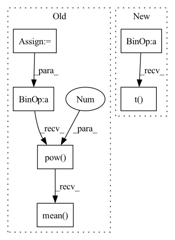

Pattern ID :3320
Before Change
batch_size = x.shape[0]
x = x.permute(0, 2, 1).reshape(-1, x.shape[1])
codes = self.encode(x)
quantized = self.decode(codes)
diff = (x - quantized).pow(2 ) .mean()
quantized = quantized + x - x.detach()
if self.training:
self.replace_dead_codes(x)
onehot = F.one_hot(codes, self.size).float()
usage = onehot.sum(0)
targets = (x.T @ onehot / usage).T
targets = torch.where(torch.isnan(targets), self.embedding,
targets)
ema_inplace(self.embedding, targets, self.ema)
ema_inplace(self.usage, usage, self.ema)
quantized = quantized.reshape(
batch_size,
-1,
quantized.shape[-1],
).permute(0, 2, 1)
codes = codes.reshape(batch_size, -1)
return quantized, diff.mean() , codes[:, None]
class ResidualVQ(nn.Module):After Change
// and all the workers will take the same decision.
self.expire_codes_(x)
ema_inplace(self.cluster_size, embed_onehot.sum(0), self.decay)
embed_sum = x.t() @ embed_onehot
ema_inplace(self.embed_avg, embed_sum.t() , self.decay)
cluster_size = (laplace_smoothing(
self.cluster_size, self.codebook_size, self.epsilon) *
self.cluster_size.sum())In pattern: SUPERPATTERN
Frequency: 4
Non-data size: 6
Instances Fragment ID: 17234613
Project Name: acids-ircam/rave
Commit Name: b58cba5d330c227f2122bc07fcbf7ed068eb91be
Time: 2023-01-24
Author: caillon@ircam.fr
File Name: rave/quantization.py
M Class Name: VQ
N Class Name: EuclideanCodebook
M Method Name: forward(2)
N Method Name: forward(2)
M Parent Class: nn.Module
N Parent Class: nn.Module
M File Name: rave/quantization.py
N File Name: rave/quantization.py
M Start Line: 68
M End Line: 97
N Start Line: 163
N End Line: 187
Before Change
)
_, encoding_indices = (-d).max(1)
encodings = F.one_hot(encoding_indices, self.num_tokens).type(z_flattened.dtype)
encoding_indices = encoding_indices.view(*z.shape[:-1])
z_q = self.embedding(encoding_indices)
avg_probs = torch.mean(encodings, dim=0)
perplexity = torch.exp(-torch.sum(avg_probs * torch.log(avg_probs + 1e-10)))
if self.training:
encodings_sum = encodings.sum(0)
embed_sum = z_flattened.transpose(0, 1) @ encodings
//EMA cluster size
self.embedding.cluster_size.data.mul_(self.decay).add_(encodings_sum, alpha=1 - self.decay)
//EMA embedding average
self.embedding.embed_avg.data.mul_(self.decay).add_(embed_sum, alpha=1 - self.decay)
//cluster size Laplace smoothing
n = self.embedding.cluster_size.sum()
cluster_size = (
(self.embedding.cluster_size + self.eps) / (n + self.num_tokens * self.eps) * n
)
//normalize embedding average with smoothed cluster size
embed_normalized = self.embedding.embed_avg / cluster_size.unsqueeze(0)
self.embedding.weight.data.copy_(embed_normalized)
loss = self.beta * (z_q.detach() - z).pow(2).mean()
z_q = z + (z_q - z).detach()
z_q = rearrange(z_q, "b h w c -> b c h w").contiguous()
return z_q, loss, (perplexity, encodings, encoding_indices)
After Change
z_flattened = z.view(-1, self.codebook_dim)
// distances from z to embeddings e_j (z - e)^2 = z^2 + e^2 - 2 e * z
d = torch.sum(z_flattened.pow(2), dim=1, keepdim=True) + \
torch.sum(self.embedding.weight.pow(2), dim=1) - 2 * \
torch.einsum("bd,dn->bn", z_flattened, self.embedding.weight.permute(1,0)) // "n d -> d n"
encoding_indices = torch.argmin(d, dim=1)
z_q = self.embedding(encoding_indices).view(z.shape)
encodings = F.one_hot(encoding_indices, self.num_tokens).type(z.dtype)
avg_probs = torch.mean(encodings, dim=0)
perplexity = torch.exp(-torch.sum(avg_probs * torch.log(avg_probs + 1e-10)))
if self.training:
encodings_sum = encodings.sum(0)
//EMA cluster size
self.cluster_size.mul_(self.decay).add_(encodings_sum, alpha=1 - self.decay)
embed_sum = torch.matmul(encodings.t() , z_flattened)
//EMA embedding average
self.embed_avg.mul_(self.decay).add_(embed_sum, alpha=1 - self.decay)
Fragment ID: 17234609
Project Name: tgisaturday/dalle-lightning
Commit Name: e387b61c8c640b56c7cbd241d8ec60ab1f022611
Time: 2021-08-12
Author: jamesk1228@gmail.com
File Name: pl_dalle/modules/vqvae/quantize.py
M Class Name: SonnetEMAVectorQuantizer
N Class Name: LegacyEMAVectorQuantizer
M Method Name: forward(2)
N Method Name: forward(2)
M Parent Class: nn.Module
N Parent Class: nn.Module
M File Name: pl_dalle/modules/vqvae/quantize.py
N File Name: pl_dalle/modules/vqvae/quantize.py
M Start Line: 184
M End Line: 215
N Start Line: 85
N End Line: 118
Before Change
)
_, encoding_indices = (-d).max(1)
encodings = F.one_hot(encoding_indices, self.num_tokens).type(z_flattened.dtype)
encoding_indices = encoding_indices.view(*z.shape[:-1])
z_q = self.embedding(encoding_indices)
avg_probs = torch.mean(encodings, dim=0)
perplexity = torch.exp(-torch.sum(avg_probs * torch.log(avg_probs + 1e-10)))
if self.training:
encodings_sum = encodings.sum(0)
embed_sum = z_flattened.transpose(0, 1) @ encodings
//EMA cluster size
self.embedding.cluster_size.data.mul_(self.decay).add_(encodings_sum, alpha=1 - self.decay)
//EMA embedding average
self.embedding.embed_avg.data.mul_(self.decay).add_(embed_sum, alpha=1 - self.decay)
//cluster size Laplace smoothing
n = self.embedding.cluster_size.sum()
cluster_size = (
(self.embedding.cluster_size + self.eps) / (n + self.num_tokens * self.eps) * n
)
//normalize embedding average with smoothed cluster size
embed_normalized = self.embedding.embed_avg / cluster_size.unsqueeze(0)
self.embedding.weight.data.copy_(embed_normalized)
loss = self.beta * (z_q.detach() - z).pow(2).mean()
z_q = z + (z_q - z).detach()
z_q = z_q.permute(0, 3, 1, 2).contiguous()
return z_q, loss, (perplexity, encodings, encoding_indices)
After Change
z_flattened = z.view(-1, self.codebook_dim)
// distances from z to embeddings e_j (z - e)^2 = z^2 + e^2 - 2 e * z
d = torch.sum(z_flattened.pow(2), dim=1, keepdim=True) + \
torch.sum(self.embedding.weight.pow(2), dim=1) - 2 * \
torch.einsum("bd,dn->bn", z_flattened, self.embedding.weight.permute(1,0)) // "n d -> d n"
encoding_indices = torch.argmin(d, dim=1)
z_q = self.embedding(encoding_indices).view(z.shape)
encodings = F.one_hot(encoding_indices, self.num_tokens).type(z.dtype)
avg_probs = torch.mean(encodings, dim=0)
perplexity = torch.exp(-torch.sum(avg_probs * torch.log(avg_probs + 1e-10)))
if self.training:
encodings_sum = encodings.sum(0)
//EMA cluster size
self.cluster_size.mul_(self.decay).add_(encodings_sum, alpha=1 - self.decay)
embed_sum = torch.matmul(encodings.t() , z_flattened)
//EMA embedding average
self.embed_avg.mul_(self.decay).add_(embed_sum, alpha=1 - self.decay)
Fragment ID: 17234604
Project Name: tgisaturday/dalle-lightning
Commit Name: f5fd383f3ac54b79f33c1ab36ae01f46ea06c6c7
Time: 2021-08-04
Author: jamesk1228@gmail.com
File Name: pl_dalle/modules/vqvae/quantize.py
M Class Name: EMAVectorQuantizer
N Class Name: EMAVectorQuantizer
M Method Name: forward(2)
N Method Name: forward(2)
M Parent Class: nn.Module
N Parent Class: nn.Module
M File Name: pl_dalle/modules/vqvae/quantize.py
N File Name: pl_dalle/modules/vqvae/quantize.py
M Start Line: 68
M End Line: 99
N Start Line: 131
N End Line: 164